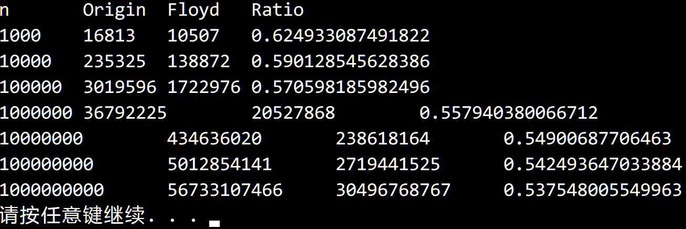

© 2019 《算法（第四版）》C# 题解 | Provided By 沈星繁
搜索解答
目前已完成到 3.1
2.4.40
上次更新：2019-02-13
发现了题解错误/代码缺陷/排版问题？请点这里：如何：提交反馈 。
题目
2.4.40
Floyd 方法。
根据正文中 Floyd 的先沉后浮思想实现堆排序。
对于 N=10^3、10^6 和 10^9 大小的随机不重复数组，
记录你的程序所使用的比较次数和标准实现所使用的比较次数。
解答
如同书上所说，可以节省约 50% 的比较次数。

先沉后浮的实现也很简单，将 swim 方法加入，
然后修改 sink 方法，去掉其中检查是否需要下沉的条件（if(!Less(pq, k, j))），
然后在 sink 方法的循环之后调用 swim。
为了获得比较次数，你可以添加一个静态全局变量 compareCount，
然后修改 Less 方法，在作比较的同时使 compareCount++ ，
每次执行 Sort 时先让 compareCount 置零，最后返回 compareCount。
代码
using System;
namespace PriorityQueue
{
/// <summary>
/// 堆排序类，提供 Floyd 优化的堆排序的静态方法。
/// </summary>
/// <typeparam name="T">需要排序的元素类型。</typeparam>
public static class HeapFloyd
{
/// <summary>
/// 利用堆排序对数组进行排序。
/// </summary>
/// <param name="pq">需要排序的数组。</param>
public static void Sort<T>(T[] pq) where T : IComparable<T>
{
int n = pq.Length;
// 建堆
for (int k = n / 2; k >= 1; k--)
{
Sink(pq, k, n);
}
// 排序
while (n > 1)
{
Exch(pq, 1, n--);
SinkThenSwim(pq, 1, n);
}
}
/// <summary>
/// 令堆中的元素下沉。
/// </summary>
/// <param name="pq">需要执行操作的堆。</param>
/// <param name="k">需要执行下沉的结点下标。</param>
/// <param name="n">堆中元素的数目。</param>
private static void Sink<T>(T[] pq, int k, int n) where T : IComparable<T>
{
while (2 * k <= n)
{
int j = 2 * k;
if (j < n && Less(pq, j, j + 1))
j++;
if (!Less(pq, k, j))
break;
Exch(pq, k, j);
k = j;
}
}
/// <summary>
/// 先下沉后上浮。
/// </summary>
/// <typeparam name="T">堆中的元素类型。</typeparam>
/// <param name="pq">包含堆元素的数组。</param>
/// <param name="k">要下沉的元素。</param>
/// <param name="n">元素数量。</param>
private static void SinkThenSwim<T>(T[] pq, int k, int n) where T : IComparable<T>
{
while (2 * k <= n)
{
int j = 2 * k;
if (j < n && Less(pq, j, j + 1))
j++;
Exch(pq, k, j);
k = j;
}
Swim(pq, k);
}
/// <summary>
/// 使元素上浮。
/// </summary>
/// <param name="k">需要上浮的元素。</param>
private static void Swim<T>(T[] pq, int k) where T : IComparable<T>
{
while (k > 1 && Less(pq, k / 2, k))
{
Exch(pq, k, k / 2);
k /= 2;
}
}
/// <summary>
/// 比较堆中下标为 <paramref name="a"/> 的元素是否小于下标为 <paramref name="b"/> 的元素。
/// </summary>
/// <param name="pq">元素所在的数组。</param>
/// <param name="a">需要比较是否较小的结点序号。</param>
/// <param name="b">需要比较是否较大的结点序号。</param>
/// <returns></returns>
private static bool Less<T>(T[] pq, int a, int b) where T : IComparable<T> => pq[a - 1].CompareTo(pq[b - 1]) < 0;
/// <summary>
/// 交换堆中的两个元素。
/// </summary>
/// <param name="pq">要交换的元素所在堆。</param>
/// <param name="a">要交换的结点序号。</param>
/// <param name="b">要交换的结点序号。</param>
private static void Exch<T>(T[] pq, int a, int b)
{
T temp = pq[a - 1];
pq[a - 1] = pq[b - 1];
pq[b - 1] = temp;
}
}
}